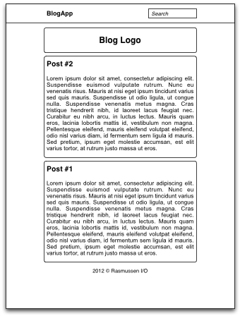
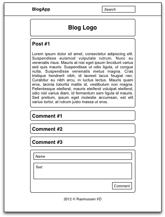

Prosjektbeskrivelse av BlogApp
BlogApp blir utviklet av Christian Rasmussen (080599) som en del av faget Databaser og Web ved Høgskolen i Telemark.
Introduksjon
BlogApp er en web-applikasjon for blogging. Den inneholder funksjoner for å lese og skrive blogginnlegg, samt kommentere på disse. Jeg vil legge stor vekt på at web-applikasjonen blir interaktiv og brukervennlig.
Denne web-applikasjonen retter seg mot alle som ønsker å formidle noe, være seg dagens hendelser eller temaer man er opptatt av.
Brukergrensesnitt

Hovedsiden viser en liste over blogginnlegg.

Et enkelt blogginnlegg med tilhørende kommentarer.

Et blogginnlegg som blir redigert.
Database
Oppdatert: 26.02.2012
Tabeller:
- users (userId, username, password)
- posts (postId, userId*, title, body, createdAt, modifiedAt)
- comments (commentId, postId*, userId*, name, body, createdAt)
Last ned SQL-skriptet som oppretter databasen med eksempeldata.
Funksjonalitet
Oppdatert: 26.02.2012
Web-applikasjonen skal bestå av to deler; en åpen del og en passordbeskyttet del.
Åpen del:
- Lese blogginnlegg: Forsiden viser de siste blogginnleggene. Blogginnleggene er sortert etter dato, hvor nyest dato er øverst.
- Lese og skrive kommentarer: Alle brukere kan åpne blogginnlegg for å lese og skrive kommentarer. Nye kommentarer krever et navn (såfremt brukeren ikke allerede er logget inn) og innholdet til kommentaren. Navnet er begrenset til 40 tegn, mens innholdet er begrenset til 1 000 tegn. Valideringen skjer både på klientsiden og på tjenersiden. Kommentarene er sortert etter dato, hvor eldst dato er øverst.
- Søke etter blogginnlegg: Alle brukere kan søke etter gamle blogginnlegg.
- Nyhetsstrøm: En RSS-fil genereres for enkel tilgang til blogginnleggene fra eksterne kilder.
Passordbeskyttet del:
- Legge til, redigere og slette blogginnlegg: Administratorer kan legge til, redigere og slette blogginnlegg. Redigering av blogginnlegg skjer direkte på framsiden av bloggen. Dette gjøres ved hjelp av en WYSIWYG-editor som gir tilgang til ulike formatteringsknapper (som uthevet skrift, understrekning, kursiv). Innholdet blir lagret i databasen som HTML, men kun spesifiserte HTML-tagger vil være tillatt. Tittelen er begrenset til 200 tegn, mens innholdet er begrenset til 10 000 tegn. Valideringen skjer både på klientsiden og på tjenersiden.
- Slette kommentarer: Administratorer kan slette upassende kommentarer.
For at web-applikasjonen skal være så interaktiv som mulig vil jeg sørge for at alle handlinger skjer sømløst, altså uten at nettsiden trenger å lastes inn på nytt. Dette løses ved hjelp av AJAX.
På grunn av at databasen er såpass enkel er det ikke noen reelle behov for hverken transaksjoner, lagrede rutiner eller triggere. For å alikevel oppfylle disse kravene må jeg lage noen kunstige behov:
- Transaksjon: I utgangspunktet så kan ikke en administrator bli slettet før alle blogginnleggene til denne administratoren er slettet. Transaksjonen starter med å slette samtlige blogginnlegg for en spesifikk administrator. Deretter slettes selve administratoren.
- Lagrede rutiner:
- Innparameter: Antall blogginnlegg - Utdata: Henter de X siste blogginnleggene
- Innparameter: postId-en til et blogginnlegg - Utdata: Henter alle kommentarene til det aktuelle blogginnlegget
- Trigger: Når en administrator legger til et nytt blogginnlegg vil en kolonne (postCount) for den aktuelle brukeren inkrementeres automatisk. (Jeg har forsåvidt satt opp on update/on delete-triggere, men teller disse?)
Jeg har ikke tatt hensyn til disse funksjonene i det vedlagte SQL-skriptet (se over).
Tilleggsfunksjonalitet
Oppdatert: 26.02.2012
Andre funksjoner som er aktuelle i et bloggsystem, men som jeg i utgangspunktet ikke vil implementere:
- Brukeradministrasjon: Legge til og slette administratorer. Endre passord for den aktuelle administratoren.
- Skreddersy utseendet: Endre på blogglogoen og design av bloggen.
- Forhindre søppelpost: Forhindre at søppelpost havner i kommentarene.
- Sanntidsoppdatering: Nye blogginnlegg og kommentarer blir automatisk sendt til alle aktive brukere.